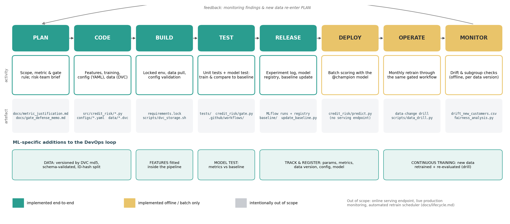
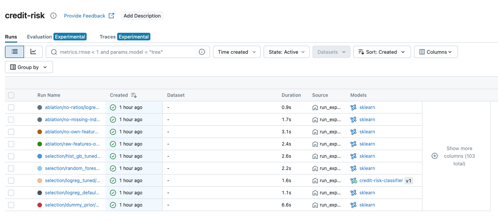
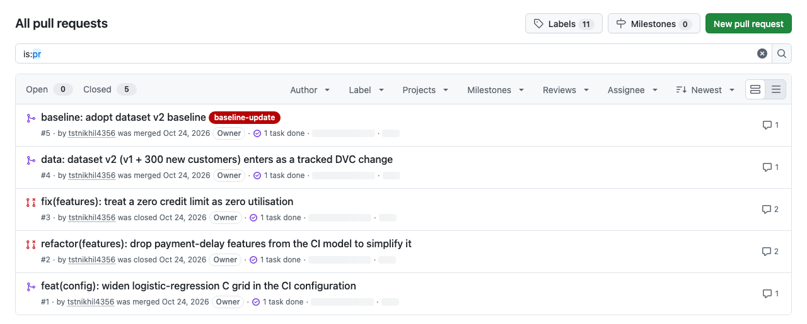
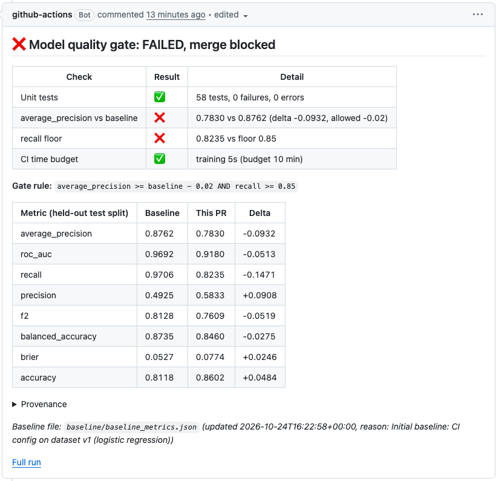
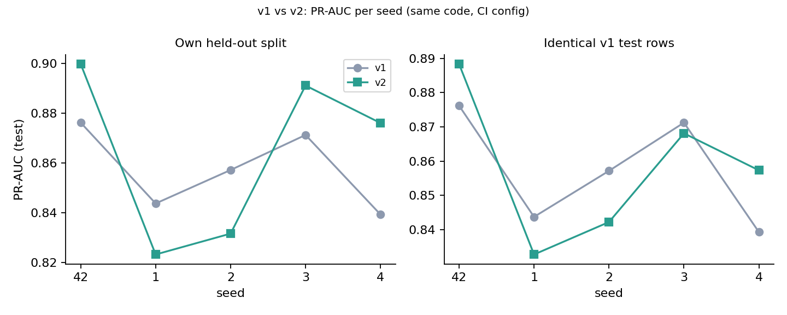
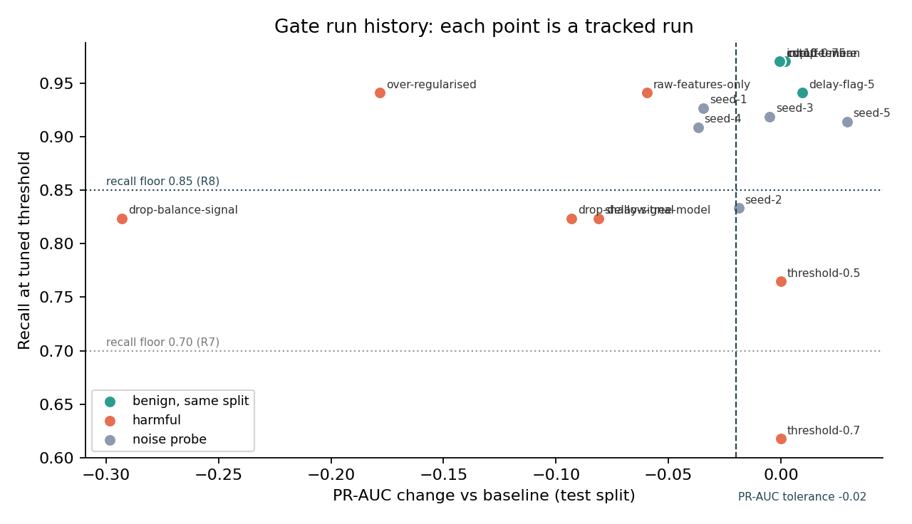
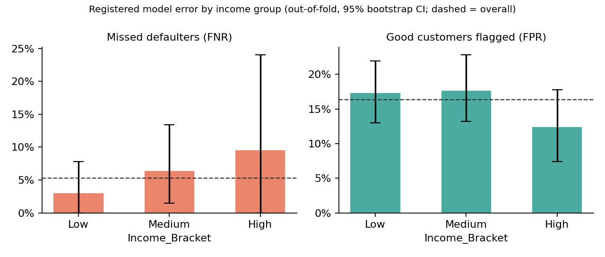

Credit Risk Model with a CI/CD Quality Gate
Every change to code, configuration, features or data is versioned, tested, tracked, and accepted only if the model is not worse. We also defend the gate itself, not just implement it.
→ next ← back T start timer N speaker notes F fullscreen
The incident
An untested change lowered model quality. Nobody noticed for two weeks, and nobody could say which code, configuration or data produced the faulty model.
Version everything
Git for code and config · DVC for data · tags as restore points
Test automatically
58 unit tests plus a model test: retrain and compare with the baseline
Track every run
MLflow records params, metrics, data version, config and model, plus a registry
Gate, and defend the gate
GitHub Actions blocks the merge; the threshold is chosen from evidence

Data is a pointer in Git, not a CSV, and any commit restores with its exact data
# v1 (tag data-v1) # v2 (PR #4, tag data-v2) outs: outs: - md5: 107f23e3bb76… - md5: 7a0507101494… size: 41847 size: 57514 path: credit_card_customers.csv
4e18fe0 baseline: adopt dataset v2 baseline 35fda82 data: dataset v2 (v1 + 300 new customers) enters as a tracked DVC change b66956d ci: pull-request quality gate, baseline guard, CODEOWNERS 44ed3a5 feat(gate): compare eight candidate gate rules on run history 4854034 test: feature edge cases, config validation, data contract … 1344642 feat(features): config-driven CreditFeatureBuilder … ff36e42 data: track dataset v1 (800 rows) with DVC
$ scripts/restore_demo.sh baseline-v1 == fresh clone → checkout baseline-v1 → dvc pull → retrain data md5 : 107f23e3bb76e1e34faaf8ddcc25a8e0 [train] data=v1 selected=logreg_ci test_AP=0.8762 Baseline reproduces exactly from this commit's code, config and data. recorded : AP=0.876207 recall=0.970588 data=v1 reproduced : AP=0.876207 recall=0.970588 data=v1 # after v2 was merged (PR #4): restore today's main $ scripts/restore_demo.sh main data md5 : 7a0507101494c3b9bc10011bc4865a08 recorded : AP=0.899700 recall=0.964912 data=v2 reproduced : AP=0.899700 recall=0.964912 data=v2
No hard-coded values. Validated YAML that fails loudly.
configs/ · one base, three environments
Stored with every run
config/resolved_config.yamlartefact- every value as a param
cfg.* config_sha256tag, also shown in the gate summary
$ python -m credit_risk.train --config configs/full.yaml \ --set features.utilisation_risk_cutoff=0.75
$ python -m credit_risk.train --config tests/fixtures/broken_bad_values.yaml ERROR: Invalid configuration (tests/fixtures/broken_bad_values.yaml): - seed: Input should be greater than or equal to 0 - data.test_size: Input should be less than 0.5 - training.cv_folds: Input should be a valid integer - gate.metric: Input should be 'average_precision', 'roc_auc', … exit code 2 · before any data is read $ python -m credit_risk.train --config tests/fixtures/broken_unknown_key.yaml ERROR: Invalid configuration: - features.utilization_risk_cutoff: Extra inputs are not permitted # a one-letter typo cannot silently fall back to a default
8 engineered features, one pipeline
Same fitted pipeline for CV, CI and predict.py. Target rejected, Customer_ID ignored. Zero-limit edge cases are tested.
Honest ablation
Engineered features: +0.079 CV PR-AUC. Our own stress index: no measurable lift (+0.002, inside the 0.04 fold sd). Reported, not hidden.
Why not accuracy?
accuracy for “nobody defaults”
0 / 34 defaulters caught
accuracy for our model
33 / 34 defaulters caught
CV PR-AUC: selection metric

Registered: credit-risk-classifier v1 @champion
Widen the C grid
Drop payment-delay features
Model worse. Tests alone would have let this through.
Zero limit → zero utilisation
The metrics can't see it; the tests can.


Nobody can quietly lower the bar
The rule
- Only
scripts/update_baseline.py: clean tree, mandatory reason, records commit + data md5 + config hash + run id - Own PR, label
baseline-update, CODEOWNER@tstnikhil4356 baseline-guardretrains and requires an exact (1e-6) match, so a hand-edited number can never merge- PRs are compared with a fixed baseline, so small drops cannot compound
Branch protection on main
{
"_comment": "Generated by scripts/update_baseline.py. Do not edit by hand: CI verifies it.",
"reason": "Adopt dataset v2 after PR #4. Drill: v2 is equivalent to v1 on identical customers (+0.0002 +/- 0.014 PR-AUC over 5 seeds, p=0.97) …",
"data_version": "v2", "data_md5": "7a050710…",
"metrics": { "average_precision": 0.8997, "recall": 0.9649, … }
}::error::This PR modifies baseline/baseline_metrics.json but is
not labelled 'baseline-update'.Baseline reproduces exactly from this commit's code, config and data. baseline AP 0.8762 (v1) → 0.8997 (v2) · reason cites the drill
What CI saw (one seed, different test rows)
PR-AUC 0.8762 → 0.8997. Looks like an improvement…
Same customers, 5 seeds, paired
p = 0.97 · all 5 bootstrap 95% intervals contain 0

- The gain comes from an easier test set: the v1 model already scores 0.93 on the new customers
- Only consistent effect: +0.011 on new customers (5/5 seeds)
- Drift: new customers slightly older (KS p = 0.007, PSI 0.095); financials and default rate unchanged
- Watch item: recall below 0.85 on 2 of 5 seeds
8 rules replayed on 18 tracked runs of known effect
| Rule | Benign accepted | Harmful rejected |
|---|---|---|
| R1 accuracy ≥ base | 5/5 | 2/7 |
| R3 PR-AUC ≥ base (strict) | 3/5 | 5/7 |
| R4 PR-AUC ≥ base − 0.02 | 5/5 | 5/7 |
| R6 F2 ≥ base − 0.02 | 5/5 | 6/7 |
| R7 R4 + recall ≥ 0.70 | 5/5 | 6/7 |
| R8 R4 + recall ≥ 0.85 ★ adopted | 5/5 | 7/7 |
Benign jitter ≤ 0.0095 · smallest real regression 0.060 → the tolerance of 0.02 sits 2× above jitter and 3× below harm.

Fairness by Income_Bracket (out-of-fold, 800 customers)
The CIs overlap, and the gaps aren't caused by the income input → acceptable, monitored (act if a gap > 10 pts with a CI excluding 0).

Trade-off accepted · what would change our mind
Versioned. Tested. Tracked. Gated, and defended.
Repository ↗
Code, configs, tests, workflow, README
Report (4 pages) ↗
Design decisions + v1 vs v2
Defense memo ↗
Gate rule, trade-off, what would change it
CI history ↗
PRs #1–#6 with gate summaries
Tracking evidence ↗
49 runs, registry, screenshots
Requirements checklist ↗
Every point of the brief → evidence
Nikhil Singh (B042) · Harsh Jain (B059) · make setup data reproduce rebuilds every number